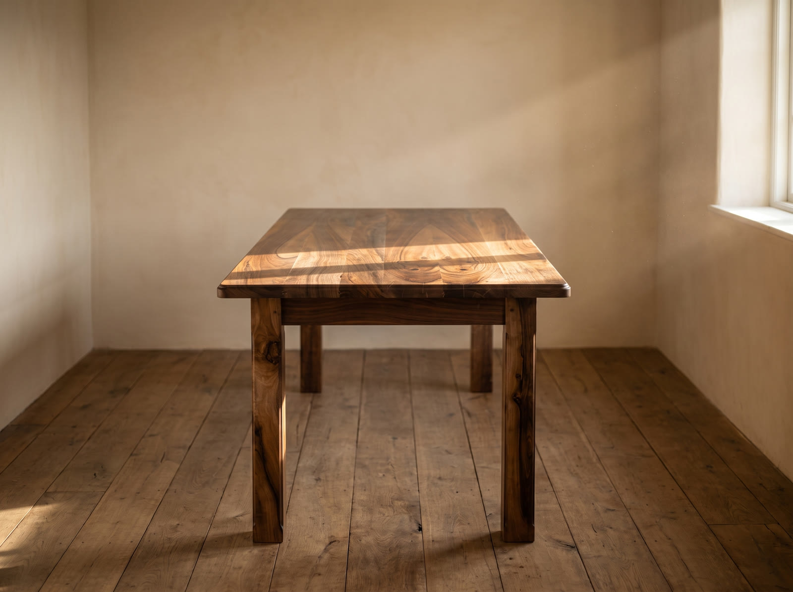
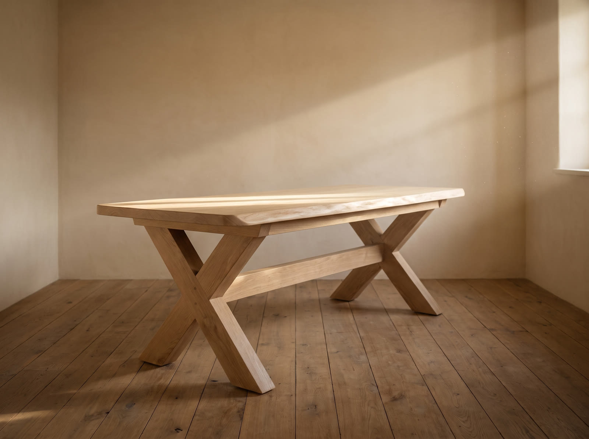
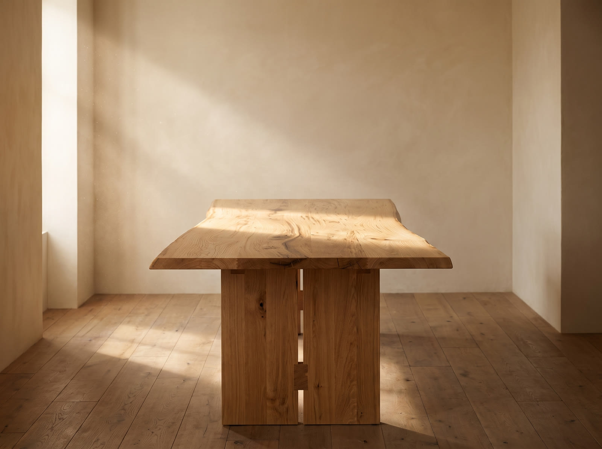
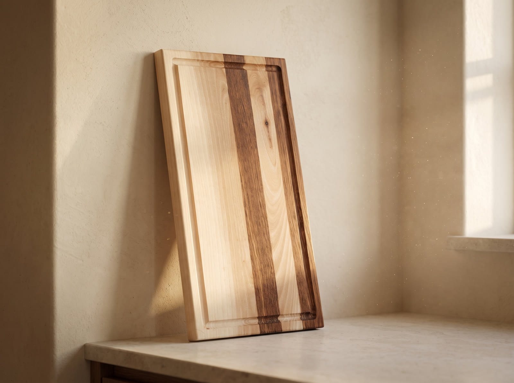
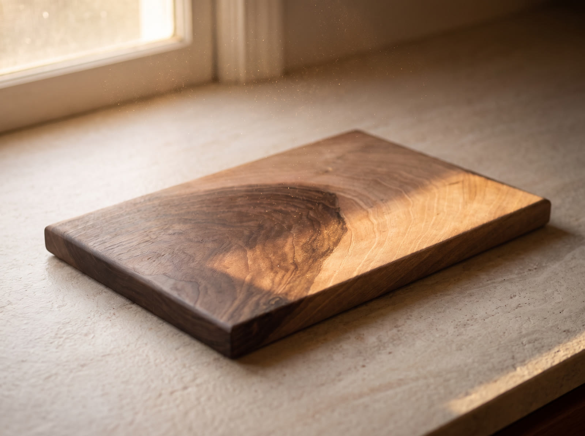
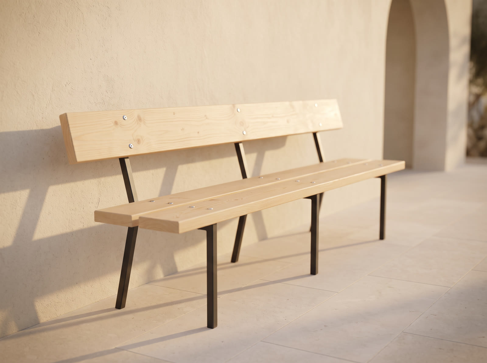

Masă din nuc masiv
NucNuc românesc, cu desenul întors în noduri. Blat gros, muchie rotunjită la mână, picioare tăiate din aceeași bucată de lemn ca blatul.
Un stejar crește un inel pe an.
Un stejar crește un inel pe an. Trunchiul le ține minte pe toate.
Trunchiul le ține minte pe toate.
Noi doar îl deschidem. Cu răbdare.
Mobilier din lemn masiv, făcut să dureze generații.
Lucrări
Fiecare masă pleacă din altă scândură, așa că nu iese niciodată la fel. Alegem lemnul împreună cu dumneavoastră, înainte să tăiem ceva.

Nuc românesc, cu desenul întors în noduri. Blat gros, muchie rotunjită la mână, picioare tăiate din aceeași bucată de lemn ca blatul.

Stejar masiv, blat cu muchia lăsată să curgă natural, picioare încrucișate și traversă trecută prin ele. O facem în orice dimensiune.

Stejar de peste cincizeci de ani, cu crăpăturile lui umplute și lăsate la vedere. Picioare late din scândură plină.

Fâșii de nuc și paltin încleiate una câte una, cu șanț pentru zeamă săpat pe toată marginea. Finisat cu ulei alimentar.

O singură scândură de nuc, tăiată exact acolo unde inima închisă trece în alburnul deschis. Fără lac, doar ulei.

Scândură groasă, planată și rotunjită, prinsă în picior de oțel vopsit. Stă afară tot anul și se reîmprospătează cu un strat de ulei.
O muchie ca asta se face cu mâna, nu cu mașina. De aceea o simțiți când treceți palma peste ea.
Detaliu de blat, nuc masivCum lucrăm
Cele mai multe supărări la mobila făcută la comandă nu sunt despre lemn. Sunt despre oameni care nu mai răspund la telefon după ce au luat avansul. Noi lucrăm exact invers.
Ne sunați și ne spuneți ce vă trebuie. Dacă aveți o poză sau un desen, cu atât mai bine. Dacă nu, vă întrebăm noi ce e de întrebat.
Primiți prețul complet și termenul în scris, înainte să înceapă lucrul. Prețul nu se mai mișcă după aceea.
Vă arătăm scândurile din care poate ieși masa dumneavoastră și alegeți împreună cu noi. Lemnul e uscat înainte, altfel se mișcă mai târziu.
Aducem piesa la data stabilită și o montăm la dumneavoastră acasă. Dacă ceva nu e cum trebuie, ne întoarcem.
Atelierul
Am început cu un banc de lucru și o rindea. Facem în continuare totul cu mâna noastră, în atelierul de acasă, și livrăm în toată țara. Nu suntem fabrică și nici nu ne dorim să fim.
Un stejar tânăr face atâtea inele într-un sfert de secol. Noi le-am făcut pe ale noastre în același timp.
2002Anul întâi
Țineți apăsat
Lemnul
Lemn masiv, uscat, tăiat aproape de casă. Fără PAL, fără MDF, fără folie care imită fibra.
Cel mai frumos desen dintre toate. Închis la culoare, cu alburn deschis pe margine. Se lucrează greu și merită fiecare oră.
Tare, greu, rezistă la lovituri și la copii. Se face mai frumos pe măsură ce trece prin mâini, an după an.
Deschis la culoare și elastic, cu fibra dreaptă. Îl alegem când vreți o cameră luminoasă și o piesă ușoară la privit.
Aproape alb, fin, aproape fără noduri. Îl folosim mai ales la tocătoare și acolo unde vrem un contrast curat cu nucul.
Ce vă promitem
Și înainte de avans, și după livrare. Dacă nu prindem apelul pentru că suntem la mașini, sunăm noi înapoi în aceeași zi.
Vă spunem totul de la început, transportul și montajul incluse. Nu apar costuri noi la final și nu vă cerem bani în plus pe parcurs.
Dacă apare ceva și întârziem, aflați de la noi înainte de data stabilită, nu după ce a trecut. Asta se întâmplă rar, dar se întâmplă.
Întrebări
Depinde de esență, de dimensiune și de felul picioarelor. O masă de stejar pentru șase persoane pleacă de obicei de la câteva mii de lei, iar una din nuc cu desen ales costă mai mult, pentru că lemnul în sine costă mai mult. Sunați-ne cu dimensiunile în minte și vă spunem exact, fără să vă cerem nimic.
Între patru și opt săptămâni pentru o masă, în funcție de câte lucrări avem în atelier în acel moment. Vă spunem termenul exact înainte să începem, iar dacă se schimbă ceva aflați de la noi din timp.
Da. Transportul îl calculăm după distanță și îl treceți în ofertă de la început, ca să știți suma totală înainte de a comanda. Pentru piesele mari venim noi cu ele și le montăm la fața locului.
Lemnul lucrează toată viața lui, asta e natura lui și nicio fabrică nu poate opri asta. De aceea îl uscăm înainte și construim blatul în așa fel încât să aibă unde se mișca. Fisurile naturale mici le umplem și le lăsăm la vedere, pentru că fac parte din piesă și nu sunt un defect.
Nu. Se plătește un avans la comandă, care acoperă materialul, iar restul la livrare, după ce vedeți piesa montată la dumneavoastră acasă.
Da, și e cel mai bun mod de a alege lemnul, pentru că vedeți cu ochii dumneavoastră scândura din care iese masa. Dați un telefon înainte să veniți, ca să fim acolo când ajungeți.
Un telefon de cinci minute e de ajuns ca să vă dăm un preț. Nu trebuie să știți dinainte ce esență vreți sau ce dimensiune, vă ajutăm noi să alegeți.
Luni până sâmbătă, 08:00 la 18:00